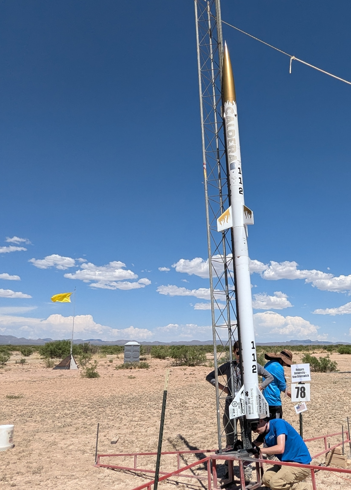

We are continuing development of our liquids program, currently designing our 3rd liquid engine (LE3) and its solid demonstrator. We are hoping to hotfire in November of this year, and in this upcoming spring hotfire with a regenerative cooling system. We are looking at making our own tanks and an aluminum airframe for the first time as well. It's our most ambitious project yet!
LE3
2nd Liquid Vehicule
Flight Computer
2021-
The flight computer is a revolutionary amateur rocketry flight computer which offers superior performance for a lower price when compared to the Telemega or Blue Raven, the industry’s leading flight computers. This flight computer features full datalogging and live telemetry capabilities with 13 sensors (1 x GNSS, 3 x Barometer, 6 x Accelerometer, 3 x Gyroscope) with advanced sensor fusion and extended kalman filtering.
Flight Computer
2021-
Previous Competition Vehicules
Excalibur
IREC 2025
We are continuing our participation in IREC with our next rocket, Excalibur. Excalibur will be a solid rocket flying to 10,000ft, aiming to showcase the highest quality of design and manufacturing we can achieve.
Excalibur
IREC 2025
Caldera
IREC 2024
Our two-stage vehicle, Caldera, reached an impressive apogee of 27,326 feet, shattering the UC Berkeley Apogee Record! This achievement marks a significant milestone for our team, showcasing the hard work and dedication that went into designing and building the rocket. The launch not only pushed the limits of our capabilities but also set a new standard for future projects.
Caldera
IREC 2024

Calvisitor
IREC 2023
IREC was our 2023 entry into the Intercollegiate Rocketry Engineering Competition. Spanning two years of work and featuring an axial avionics bay and air brakes system to reach as close to 10,000ft. The rocket flew two exciting payloads: a vibrational art system, and a muon detector, Calvistor was completed in 2023 and flew over the summer at competition reaching an apogee of 10023ft placing 4th overall.
Calvisitor
IREC 2023
BearForce 1
IREC 2021
Bear Force One was launched over 10,000 ft above the Mojave Desert for the Intercollegiate Rocketry and Engineering Competition (IREC) during the summer of 2021.
Measuring in at over 10 feet tall, BFO is our largest rocket to date. It features a 6 inch diameter fiberglass airframe, and a cubesat form payload which will take our custom built muon detector and microbial fuel cell payloads to 10,000 feet.
BearForce 1
IREC 2021
Other Previous Projects
ALULA LE2
1st Liquid Vehicule
Our first liquid rocket, ALULA, achieved an apogee of 6,126 feet, making history as the first liquid rocket from UC Berkeley to be successfully recovered. ALULA’s success didn’t stop there—it also won the Dollar Per Foot Competition at the Friends of Amateur Rocketry. This achievement is a testament to the dedication and talent within our team, paving the way for even more ambitious liquid projects ahead.
ALULA LE2
1st Liquid Vehicule
MINDI
2in Minimum Diameter Rocket
MINDI stands for minimum-diameter, and it’s a rocket in which the motor slides directly into the body tube rather than being inserted into a smaller motor-mount tube. Such a design poses challenges when it comes to mounting the fins and retaining the motor, and along with our new project recruits we will work to address these obstacles and build a high-flying rocket.
In particular, we have investigated fin glassing and composites techniques, as well as the use of a 3d-printed motor retainer. We have completed manufacturing and are set to launch on December 3rd.
This rocket will shatter UC Berkeley’s (and our previous) altitude record at an astonishing 14,000 feet!
MINDI
2in Minimum Diameter Rocket
Pinkbeary
1st 2-Stage Vehicule
Stage Separation rocket (SSEP) was launched in September of 2022.
It is a proof-of-concept project testing a two stage airframe design, as well as a spring-actuated separation mechanism that is released upon the detonation of explosive bolts (dubbed pyro bolts). It involved several new recovery methods and new airframe architectures.
Stage separation technology makes rockets more efficient by ejecting dead weight and thus this project is a desirable, if not necessary step towards STAR’s eventual spaceshot goal. SSEP’s apogee was around 2,377 feet.
Pinkbeary
1st 2-Stage Vehicule
ELLIE LE1
1st Liquid Engine
The Experimental Liquid Low Impulse Engine (ELLIE) is the first time that STAR has attempted to create a bi-propellant rocket engine. Its purpose was to lay the groundwork for a flyable liquid in future iterations.
Throughout Fall 2021 and Spring 2022, the propulsion and avionics team carried a long-standing design of the Gaseous Oxygen - liquid Ethanol engine to completion, ending the project with a successful 6 second test fire.
ELLIE LE1
1st Liquid Engine
AirBears
AirBears flew nominally, going up to 4509 ft apogee in November of 2019.
This was incredibly close to the projected apogee of 4500 ft. The two recovery altimeters recorded 4508 and 4509 ft respectively. Drogue deployed at apogee and the main parachute deployed at 800 ft.
There was very little wind thus the parachute drifted very close to the original launch location around 100 meters away. All black powder was fully burned off.
AirBears
Arktos
Arktos was launched several times between February and March of 2018.
The launch vehicle is constructed of blue tube tubing and couplers and has a fiberglass nose cone, a 3D printed boattail, and a transition piece from 6-4in which is also 3D printed, but is also reinforced with fiberglass. The length of the launch vehicle is 111in. The wet weight of the launch vehicle is 27.9 lbs and the dry weight is 22.9 lbs. The launch vehicle utilizes a Cesaroni L730 motor to achieve a simulated apogee of 5323ft.
Arktos
SubArktos
SubArktos was launched on November of 2017.
This rocket was a prototype of Arktos for theNasa Student launch. Similarly to what will later be Artos, it had a transition piece 3D printed, reinforced with fiberglassand the launch vehicle utilizes a Cesaroni L730.
SubArktos
URSA Major
Our competition rocket (URSA Major) was successfully launched three times between January and April, the last of which was our competition launch in Huntsville, AL, Measuring 97” in length, 6” in diameter, and sporting an Aerotech L1150 motor. It used a dual-deployment parachute system with a drogue chute deploying at apogee and a main chute at 1000’ AGL.
During descent, we used a nose-cone-mounted camera and a Raspberry Pi to perform the target detection algorithm, before deploying several landing legs and ejecting the payload and nose-cone from the main body around 600’ AGL to land upright.
URSA Major
URSA Minor
On December 4, 2016, CalSTAR launched its first high-powered rocket, URSA Minor, a 2/3 sub-scale version of our final vehicle which featured a nose-mounted camera, clear nose cone, and first-person flight video. It’s launch altitude is 4633 meters.